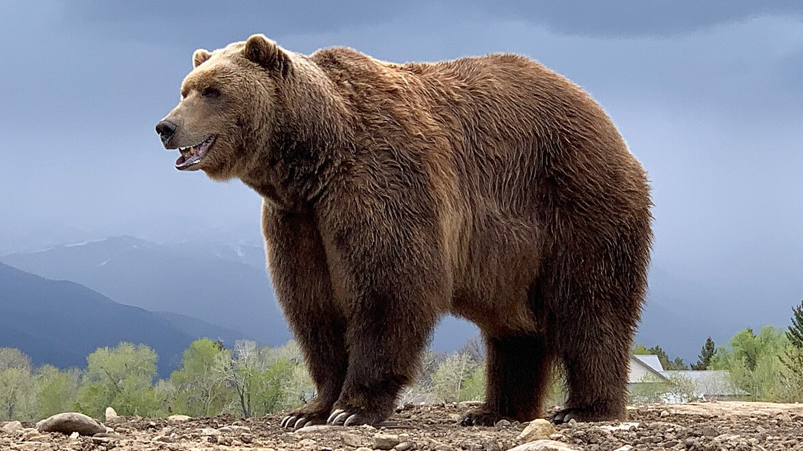
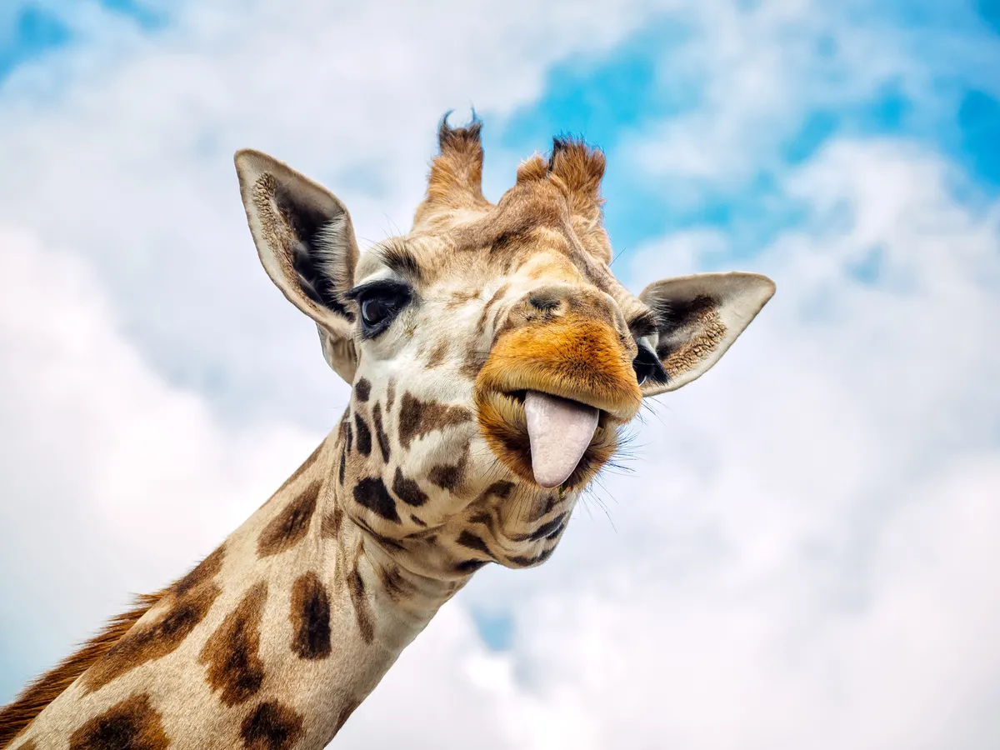
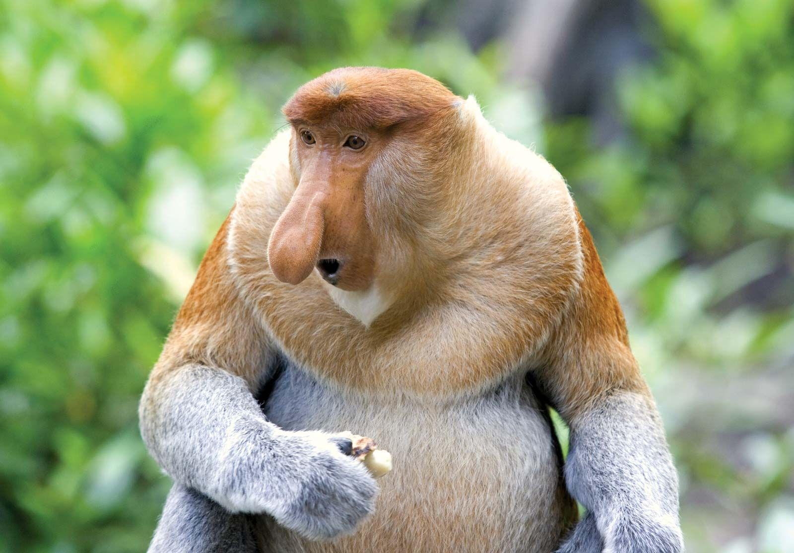
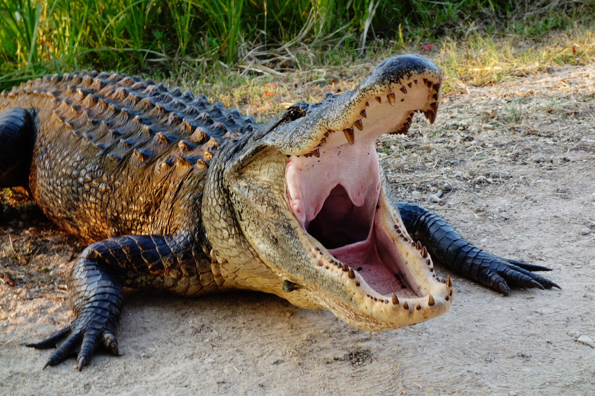

Bears
Fierce predators, bears like to hunt for fish among other prey.
- Ollie
- Mona
Giraffes
Giraffes are gentle creatures, with long necks and distinct tongues.
- Frankie
- Coconut
Lions

Kings of the jungle, male lions lounge while their female mates hunt.
- Mella
- Karl
Monkeys
Monkeys are intelligent and cute, they are also not afraid of chaos.
- Cookie
- Earl
- Banana Pudding
Alligators
Biologically unchanged for thousands of years; they are cold-blooded, apex predators.
- Wren
- Aspen
- Mika